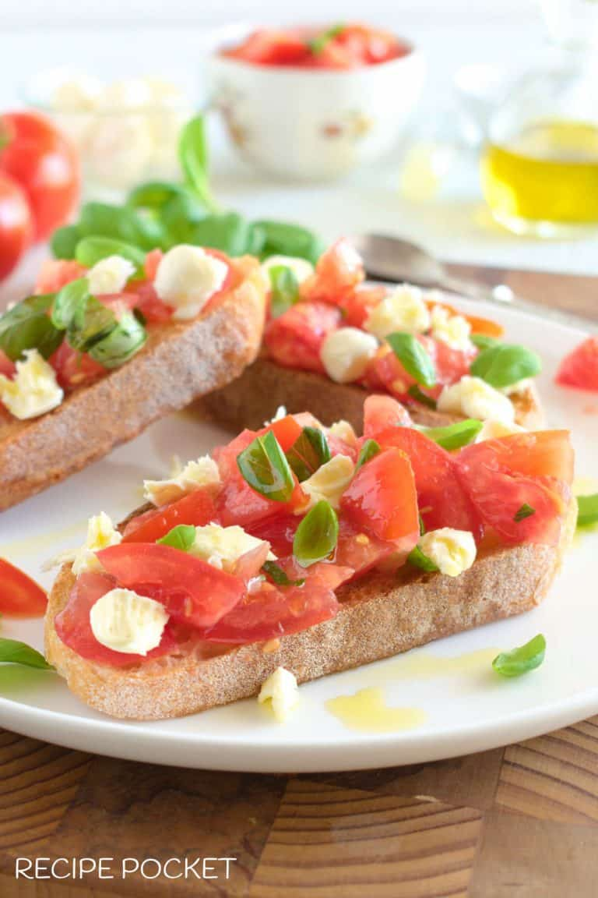

Bruschetta with Mozzarella
Brushetta with Mozzarella

Description
Great for a snack,appitizer,or light meal.This bruschetta is sure to be a
hit. A delicious combination of fresh tomato,basil,and mozzarella
on garlicky bread.
Ingredients
- 450 grams tomatoes
- 1 handful of basil
- 2 tablespoons extra virgin olive oil
- 1 teaspoon of salt
- 2 garlic cloves;peeled amd cut in half
- 8 slices sourdough nread(1/4 inch)
- 150 grams cherry bocconcini
Steps
- Wash tomatoes;slice in half and set to the side
-
Wash and dry basil leaves;tear in smale pieces and add to tomatoes
- Add olive oil and salt;stir to coat
- Peel garlic and cut in half
-
Toast bread and while warm rub garlic on one side of the bread pieces
-
Spoon tomato mixture(with juices) over the toasted bread,top with
mozzarella
- Drizzle with olive oil and serve immediately